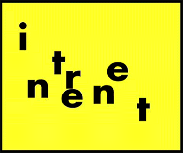
La red de ordenadores más extensa que existe en la actualidad

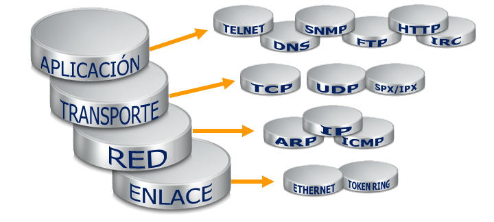
Gracias a unas normas y estándares comunes pueden comunicarse e intercambiar información todos los ordenadores conectados
a dicha red
La arquitectura que da soporte a Internet es la denominada
cliente/servidor

Protocolo TCP/IP
Transfer Control Protocol/Internet Protocol

Es necesario que cada máquina posea una identificación única
 216.58.208.238
216.58.208.238
Historia

1989
Sistema de comunicación entre los científicos del CENR llamado ARPANET
1990
Sistema de hipertexto Enquire

Sir Tim berners-Lee
1994
 Se funda el World Wide Web Consortium entre EUA y el CERN
Se funda el World Wide Web Consortium entre EUA y el CERN
Crecimiento exponencial
En 1993, Internet contenía 13.170 redes nacionales e internacionales

2018
El número de usuarios de Internet en el mundo supera el 50% de la población: 4 000 millones

¿Cómo funciona?

Protocolos de comunicación
Protocolo HTTP
La Web utiliza el HyperText Transfer Protocol que permite el intercambio de información
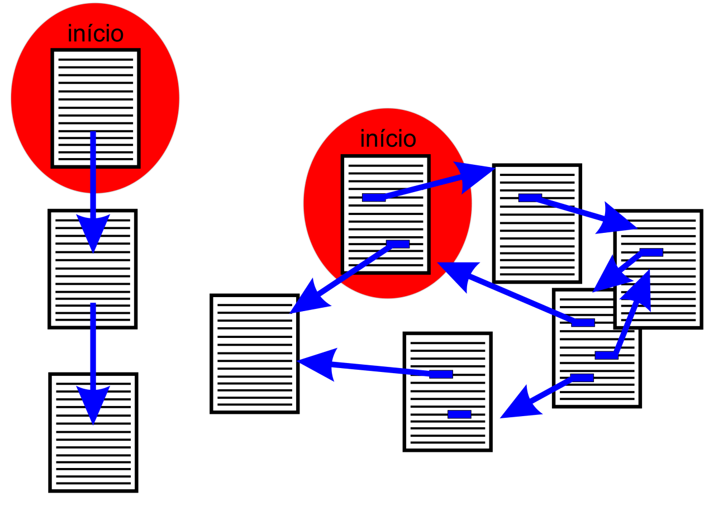
Protocolo HTML
Las páginas web utilizan el lenguaje HTML el lenguaje de marcas de hipertexto
Ejemplo
Direcciones IP y dominios
El propósito de los nombres de dominio de Internet y del sistema de nombres de dominio es traducir una dirección IP
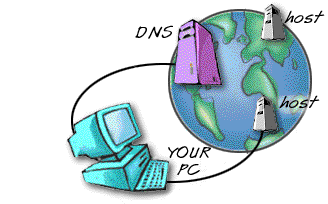
Un dominio o nombre de dominio es el nombre con que es identificado un sitio Web. Cada dominio tiene que ser único en Internet
Existen diversos tipos de organizaciones, los más comunes son .com (comercial), .net (Network), .edu (educación), .org (organización).
InterNIC se encarga de asignar las direcciones IP en los diferentes dominios nacionales
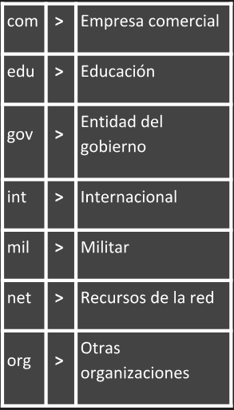
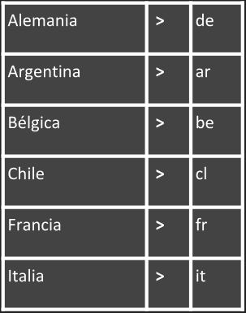
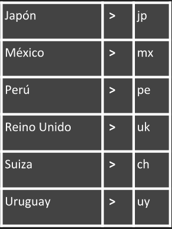
El modelo cliente-servidor
Cliente: se trata de un nodo de la red que emplea los recursos que proporciona un servidor
Servidor: nodo de red que proporciona servicios a PCs cliente
Nodo: cada uno de los ordenadores individuales u otros dispositivos conectados a la red
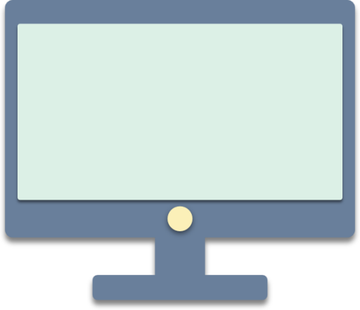
Paquete: cada uno de los bloques en que se divide la información para enviar, incluye la dirección de origen y de destino
Formateadas para transmitirse de un nodo a otro
Ruteador: dispositivo que conecta dos redes y que opera como un puente, pero que también puede elegir rutas a través de una
red
La URL
Universal Resource Locator
Se trata de una definición única o dirección permanente de localización de un documento
HTML
Es un lenguaje que describe la estructura de los documentos a través de marcas y etiquetas, y que posibilita los enlaces
a otras páginas
HTTP
Es un protocolo que permite la transferencia de archivos y documentos en múltiples plataformas
Es un programa o Software que nos permite visualizar páginas web a través de Internet
El navegador interpreta el código en el que está escrita la página web y lo presenta en pantalla para interactuar y navegar
hacia otros sitios mediante enlaces o hipervínculos
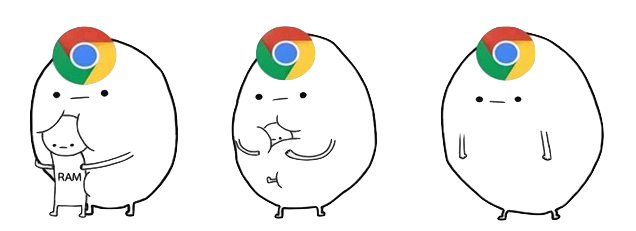
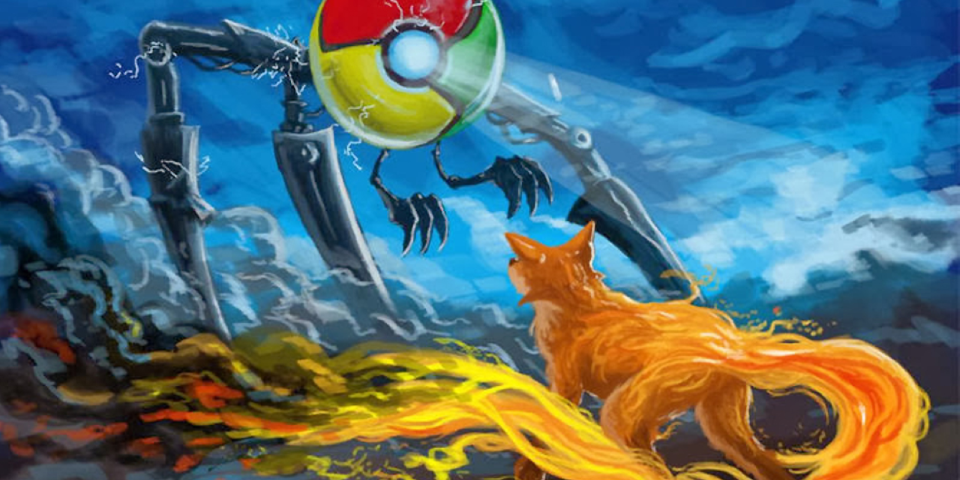
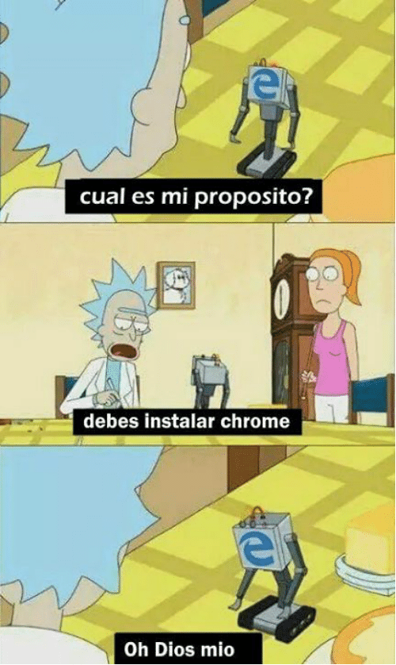
Aplicaciones informáticas que rastrean la Web catalogando, clasificando y organizando la información, para después ofrecérsela
a los navegantes
Índices de búsqueda
Está organizado a partir de categorías, en función de las cuales se divide la información de las páginas web
La administración de los índices de búsqueda está a cargo de un equipo humano, que se encarga de construir la base de datos
del buscador.
Motor de búsqueda
Aquí la recopilación de páginas web es realizada a través de un programa llamado araña, el cual recorre de forma permanente
la web e introduce las direcciones en la base de datos
Metabuscadores
La característica principal es que carecen de una base de datos propia. Sino que utilizan la de otros motores de búsqueda
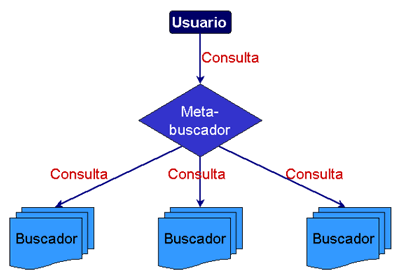
Sugerencia 1: No te compliques
Busques lo que busques, comienza con una búsqueda simple, como ¿dónde está el aeropuerto más cercano? Puedes agregar unas
palabras descriptivas si es necesario
Sugerencia 2: Realiza búsquedas por voz
¿Te cansaste de escribir? Haz clic en el ícono del micrófono en la aplicación de Google o en el cuadro de búsqueda de Chrome
para buscar por voz
Sugerencia 3: Elige las palabras con cuidado
Cuando estés pensando qué palabras escribir en el cuadro de búsqueda, elige las que probablemente aparecerán en el sitio
que estás buscando
Sugerencia 4: No te preocupes por lo que no tiene importancia
Ortografía: el corrector ortográfico de Google usa de manera automática la ortografía más común de una palabra específica,
sin importar si la escribiste correctamente
Mayúsculas: obtendrás los mismos resultados si buscas New York Times o new york times.
Sugerencia 5: Encuentra respuestas rápidas
Para muchas búsquedas, Google se encargará de mostrarte una respuesta a tu pregunta en los resultados de la búsqueda
Clima: busca clima para ver el tiempo en tu ubicación o agrega el nombre de una ciudad (por ejemplo clima Seattle) para ver
el tiempo de un lugar específico
Diccionario: escribe definir delante de cualquier palabra para ver la definición
Cálculos: ingresa una operación matemática, como 3*9123, o busca soluciones para ecuaciones gráficas complejas
Conversiones de unidades: ingresa cualquier conversión, como 3 dolares en euros
Deportes: busca el nombre de tu equipo para ver un cronograma, resultados y más
Datos rápidos: busca el nombre de una celebridad, una ubicación, una película o una canción para encontrar información importante